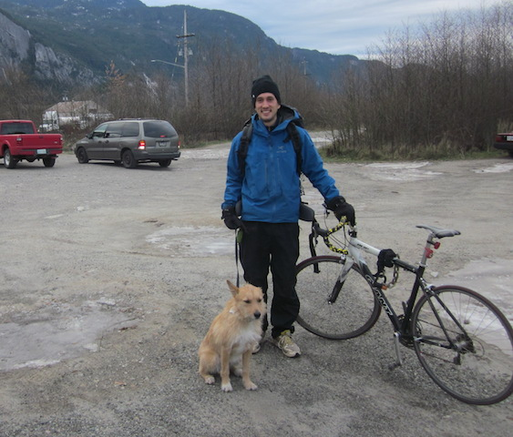

2013 | 2014
This was the second year of my efforts cleaning the Squamish waterways. I started the day again at Nexen, bringing my bike to get around and my dog for fun :).
The beach at Nexen with the Squamish Chief in the background.
Cleaning the Squamish Spit which is a great launch spot for windsrufing and kiteboarding in the summer.
The final haul! Going through sorting for recycling.